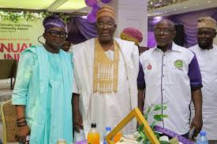

Profiles of Faculty and Alumni
Published on January 3, 2025
The university is proud to showcase its distinguished faculty and successful alumni. This post highlights the achievements of prominent professors who have made significant contributions to their fields of expertise, as well as alumni who have excelled in their professional careers. Their stories serve as an inspiration to current students and demonstrate the lasting impact of a UDUS education. Faculty and alumni profiles are updated regularly to keep the university community informed of its accomplishments.
Back to News